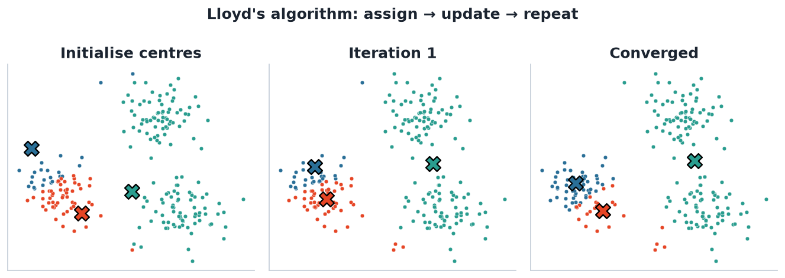
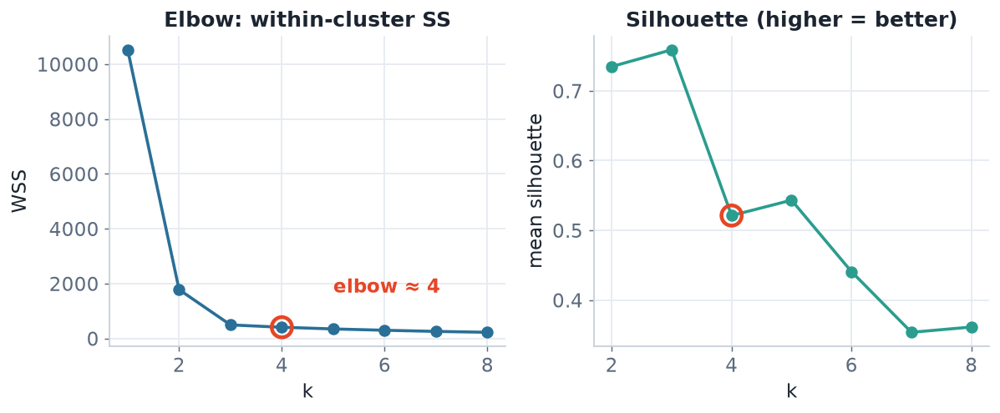
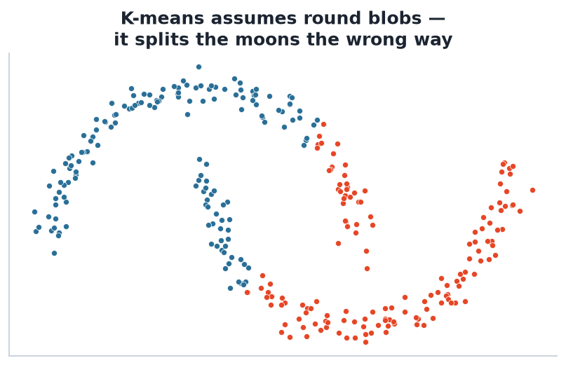

The workhorse partitioning algorithm: how it works, how to tune it, and where it breaks.
K-means partitions n points into k clusters C1,…,Ck to minimise the total within-cluster sum of squares:
Each cluster is summarised by its centroid μk (the mean). We want every point close to its own centroid.
Searching all partitions is NP-hard. Lloyd's algorithm gives a fast, greedy approximation that usually works well.

Assign each point to the nearest centroid, then move each centroid to its points' mean; repeat until nothing changes. Here a poor start converged to a sub-optimal split — motivating random restarts.
Input: data X, number of clusters k.
k-means++).Different random starts can give different clusterings. A bad start gets stuck (see the ‘Converged’ panel on the previous slide).
Run k-means from many random starts and keep the best (lowest within-SS). Use k-means++ initialisation to spread starting centroids apart.
set.seed(1)
km <- kmeans(X, centers = 3, nstart = 25) # 25 random restarts
km$tot.withinss # objective value
km$cluster # cluster labels
Left: within-SS always falls with k — look for the ‘elbow’ where the gain flattens. Right: the silhouette rewards well-separated clusters and often gives a clearer peak.
ai = mean distance to own cluster; bi = mean distance to nearest other cluster. Near +1 = well clustered, near 0 = on a boundary.

K-means assumes roughly spherical, equal-size clusters and uses Euclidean distance. On these two interleaving ‘moons’ it carves a straight boundary and gets them wrong.
• Non-convex / elongated shapes
• Very different cluster sizes or densities
• Unscaled variables
→ Consider GMM (L05), hierarchical (L06) or density-based methods.
Using the standardised nutrition data:
nstart = 25 and record tot.withinss.cluster::silhouette). Do the two methods agree?